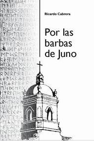

| home | | | comentarios de libros | | | notas periodísticas | | | educación vial | | | maestro ciruela | | | investigación | | | acerca | | | @ |

Editorial Chalada, 2010
ISBN 978-987-26081-0-1
308 páginas
Distribuye y vende EUDEBA
en kioscos y librerías
y por su portal de internet.
Rolando Cánepa es un físico que no encuentra trabajo en el sistema científico y recurre a la docencia para ganarse la vida. Consigue un puesto en una escuela secundaria privada y conservadora. Como todo físico, Cánepa es curioso, y en algunas circunstancias insaciable. A poco de empezar su trabajo se enreda en tres historias diferentes. La primera es un juego de intrigas: la biblioteca del colegio encierra un juego del tesoro. Pero las pistas no son papelitos escondidos que pueden extraviarse: son los mismos libros sin que sus autores siquiera lo sepan. La segunda es la muerte dudosa de un profesor que trabajó en el mismo colegio: entre Cánepa y el muerto se teje una extraña amistad. La tercera es una historia de amor: el físico se enamora de una alumna y padece hasta el infinito la culpa y el propio cuestionamiento moral por la diferencia de edad y de roles.
A medida que avanza la novela las tres historias se hacen una sola. Cánepa también lo comprende, pero sólo cuando ya es imposible retroceder, y la suerte está echada.
Por las barbas de Juno puede inscribirse en el género policial, o el thriller, o la novela de misterio, o la novela académica; pero más allá de eso es un canto por la libertad, un alegato por el librepensamiento.
Algunos comentarios de lectores
Por las barbas de Juno es una novela atrapante y vital. La leí en dos noches sin poder abandonarla.
Cabrera utiliza una prosa despojada, directa, cuya sencillez formal no
sólo permite una lectura fluida sino que posibilita abrir el campo de
receptores hacia el público joven. Las oraciones cortas, las
descripciones precisas y la profusión de diálogos le dan un carácter
cinematográfico.
Utilizando operaciones literarias propias del folletín y el best
seller, e intercalando, incluso, figuras e ilustraciones, Cabrera
avanza en la trama de la mano de una serie de enigmas que entrelazan la
ciencia y la literatura, dándole a la obra carácter de pieza de
divulgación científica y divulgación literaria a la vez.
A la historia que cuenta puede caberle el género thriller, el
melodrama o el policial, porque de todos hecha mano en dosis que
terminan por generar un héroe tan anónimo como
romántico, tan activo como reflexivo.
Hay en la novela un mensaje ético trascendente. La recomiendo
con fervor.
Ricardo Cabrera presenta un modo de enseñar pensado en el alumno sin perder su lugar en el rol, ni rigurosidad científica por ello, utiliza analogías verdaderamente creativas para la comprensión de teorías del campo de la ciencia poco fáciles de enseñar, filosóficamente controvertidas.
Trata con delicadeza y cierto pudor los vínculos que se establecen en torno al amor.
Novela de ágil lectura, planteada en capítulos cortos y secuenciados, que hacen posible dejarla y retomarla sin perder el hilo de la trama.
La recomiendo dado me atrapó su lectura, pero además por los debates y desacuerdos que pueda generar. Muy interesante.
| Se permite su reproducción citando la fuente. Última actualización marzo 2014. Buenos Aires, Argentina. |